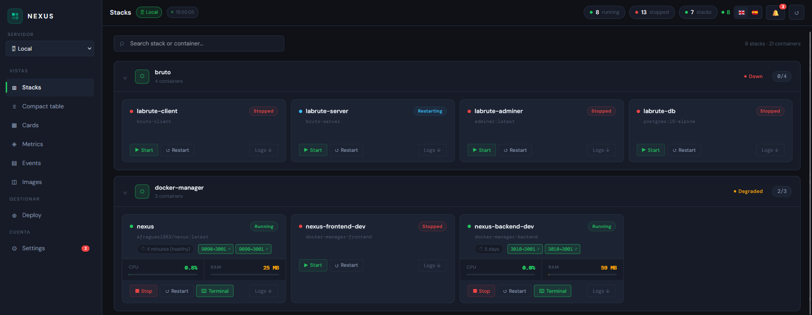

A lightweight, beautiful panel to manage your Docker containers — built as a real alternative to Portainer. No bloat. No complexity. Just control.
docker compose up -d

Why NEXUS
Portainer is great — for enterprises. But for homelab enthusiasts and small teams, it's overkill. NEXUS gives you 90% of what you need in 10% of the complexity.
Features
CPU & RAM per container with live sparkline history. Know what's happening at a glance.
Manage multiple Docker servers from one panel. Secure agent-based architecture — the socket never leaves the host.
docker exec directly from the browser. No SSH, no extra tools needed.
List, inspect, pull from Docker Hub and remove local images. Full control over your registry.
Real-time notifications when a container stops unexpectedly. Telegram integration included.
Containers grouped by docker-compose project. Deploy, edit and manage stacks directly from the UI.
Admin and Viewer roles. Manage who can access and what they can do.
Installable as a desktop or mobile app. Fully responsive, works everywhere.
Most multi-host Docker panels expose the Docker socket over TCP — that's root access over the network. NEXUS works differently: a lightweight agent runs on each remote host, wraps the socket in its own authenticated API, and only exposes the endpoints it needs. The socket never leaves the host.
One command. Your Docker infrastructure, under control.
docker compose up -d